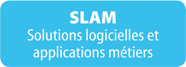
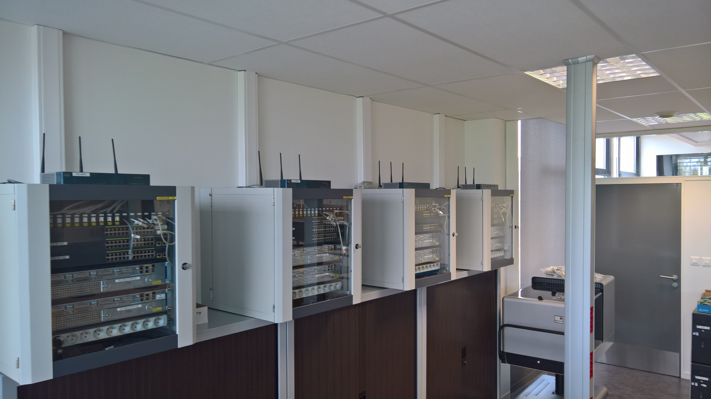
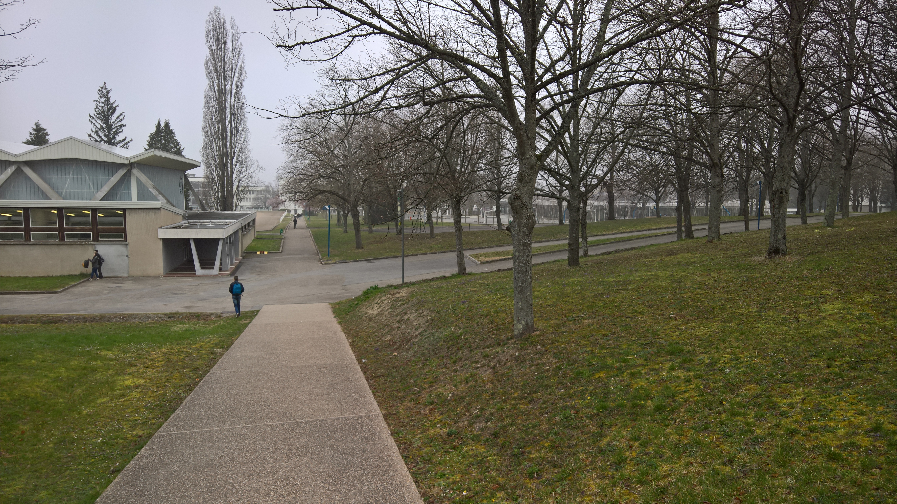

BTS Services Informatiques aux Organisations (SIO)
Le BTS Services Informatiques aux Organisations (SIO) est une formation en deux ans qui prépare aux métiers de l’informatique en entreprise. Elle permet d’acquérir des compétences solides aussi bien en développement qu’en administration des systèmes et des réseaux.
Option SLAM

L’option SLAM (Solutions Logicielles et Applications Métiers) est orientée vers le développement d’applications. Elle forme à la conception, au développement, au test et à la maintenance de solutions logicielles répondant aux besoins des entreprises.
- Développement d’applications (web, client-serveur)
- Programmation (Java, PHP, SQL, etc.)
- Gestion des bases de données
- Maintenance et évolution des applications
Option SISR (ma spécialité)

L’option SISR (Solutions d’Infrastructure, Systèmes et Réseaux) est orientée vers l’administration des systèmes, des réseaux et la cybersécurité. C’est la spécialité que j’ai choisie et que je souhaite approfondir.
- Installation et administration de serveurs (Linux, Windows)
- Gestion des réseaux (LAN, WAN, routage, VLAN)
- Sécurisation des infrastructures (pare-feu, VPN, sauvegardes)
- Supervision et maintenance des systèmes
Pourquoi ce lycée et ce BTS ?


J’ai choisi le Lycée Albert Londres à Cusset pour sa réputation dans le domaine
de l’informatique et la qualité de son encadrement.
Le BTS SIO m’a attiré car il combine théorie et pratique et permet de développer
des compétences solides dans les deux spécialités SLAM et SISR.
Ma spécialité SISR correspond parfaitement à mon projet professionnel, car
mon objectif à long terme est de devenir administrateur réseau.
Ce métier me permettra de concevoir, sécuriser et maintenir des infrastructures
informatiques fiables au sein des entreprises, un domaine qui m’intéresse
particulièrement et dans lequel je souhaite m’investir pleinement.